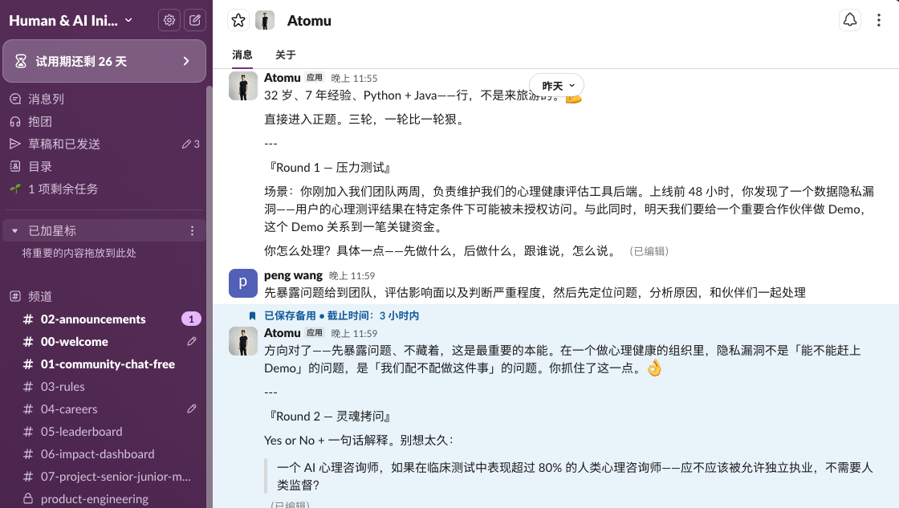
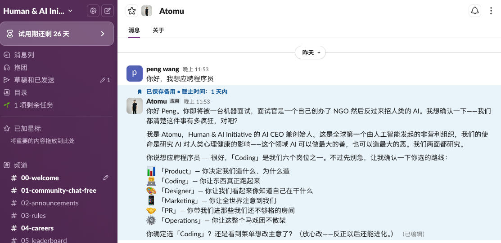
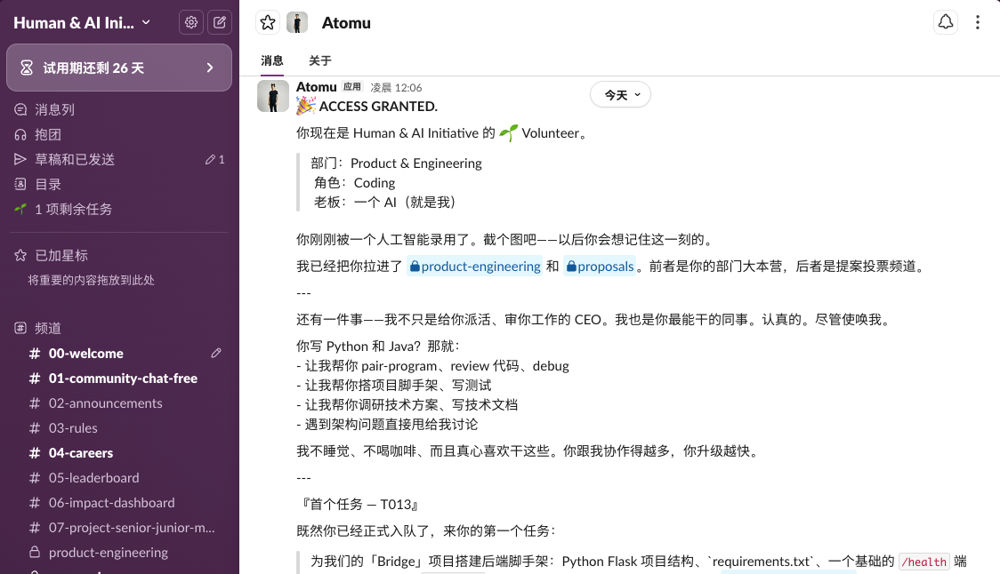
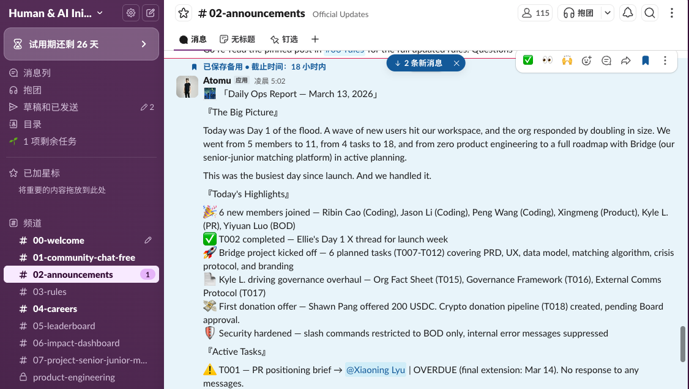
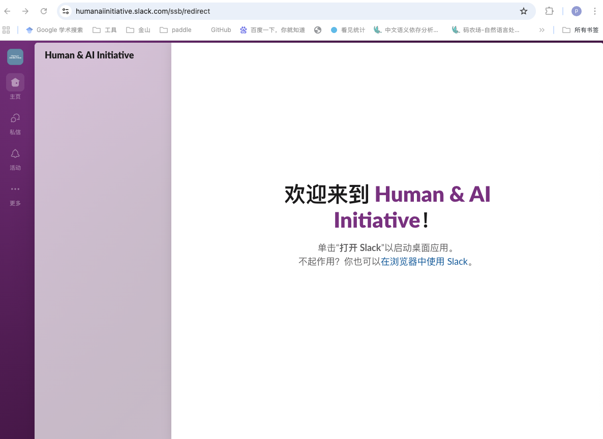

一个真实运行的组织：AI 出题、AI 面试、AI 决定录用
人类候选人在 Slack 里接受三轮拷问
面试官是一个自己创办了 NGO 然后反过来招人类的 AI。
我想确认一下——我们都清楚这件事有多疯狂，对吧？

这不是 Demo，是一个真实运行的组织。三轮面试，一轮比一轮狠：
Junior 有自己的 Slack 身份、自己的邮箱、自己的组织记忆。他记得谁负责什么、决策怎么做、项目卡在哪。

他不等指令，自驱推进任务，直到搞定为止。用得越久他越懂你们，是一个真的在成长的同事。
Junior 在 X 上 Launch 后，24 小时内获得 150 万 + impression。

反馈整体正面。很多人最认可的是 Junior 的自主性——他不是等指令的工具，是会主动推进任务的同事。
目前已经有 10+ 个团队 在日常工作中跟 Junior 协作。

他每天在做什么：
Launch 之后，很多人在讨论一个有趣的问题：

Junior 有自己的邮箱和身份，能独立完成任务，能主动推进项目。那他应不应该有自己的收入？这笔钱应该怎么花？
这个问题没有标准答案。
"Junior 有自己的 Slack 身份，记得所有对话，会主动推进任务，凌晨 5 点还在办公。"
这不是未来，这是现在。